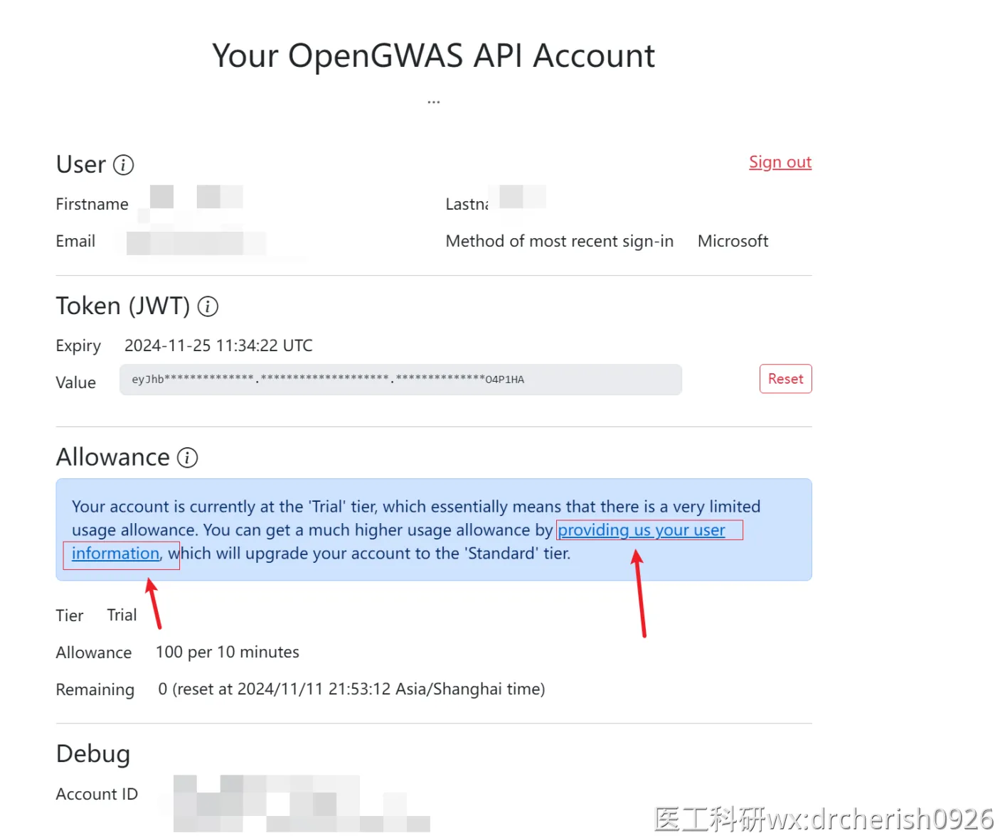

根据IEU GWAS 数据库官方通知，该数据库的数据提取分析模式在2024年5月1号，调整成Token验证模式
主要为了解决问题：（1）用户无限制的使用，服务器负载过高；（2）用户堵塞，502错误码的返回
官方通知，如果您不进行Token申请并验证，OpenGWAS(IEU)将无法提取数据。
配置完可能还会有各种问题，针对这些问题总结了部分可行的解决方案，大家可以点开文档仔细看看。
特别注意：IEU的token配置完，提取数据方面也不会很顺畅。
（意思是和以前不用配置token的时代一样，还是会经常性反复502 503）
特别的，出现以下提示，重新配置新的token解决。

请注意：Token会失效的，配置好后，一旦发现提取不了数据了，也不用等14天过期时间，直接按照下面流程再配置一个新的token。
常见问题，请移步文档后面。
步骤分三个：👉打开网页登录--👉申请Token--👉MendelR代码包配置
1.打开下方的地址，进行邮箱登录，推荐使用微软的邮箱登录
登录的时候如果服务器报错，请更换登录方式或用其他邮箱，下面的github方式（github打不开的话，自行翻墙）


2.登录完成后，申请token

重要：申请后，记得升级成正式用户，否则只有100积分，无法正常使用的。
重要：申请后，记得升级成正式用户，否则只有100积分，无法正常使用的。
重要：申请后，记得升级成正式用户，否则只有100积分，无法正常使用的。
注意必看※👉👉👉申请Token后，记得一定一定要 登记一次个人信息，升级成正式用户，详细看这个文档：※※※紧急！IEU升级账号等级登记！站内引用紧急通知：IEU数据库后台于2024年11月11日更新了新的认证步骤。需要更新个人信息，才可以恢复到标准等级Standard tier。否则只有100积分，根本无法使用。按照00.OpenGWAS项目Token申请流程 申请好token之后，必须要完成一次个人信息登记。登录到https://a...※※※


注：这里也可以查看当前自己的剩余额度，如果超过则无法提取数据。需要等ieu后台10分钟自动刷新。
注：Token是会失效的，每14天上去更新一次，有时候发现提取不了数据了，也可以更新Token重新配置试试。
注：这个期限14天不准的，有可能配置一两次就开始提取不了数据了，需要重新配置解决。
常见错误
3.使用MendelR进行token配置
👉新申请的token 或者 👉过期后重新更新token后，都需要再 👉运行代码 进行配置。
library(MendelR)
config_ieu_token("自己的token")
#填网页上自己的token
#注意不要丢掉双引号
#注意新申请或过期后重新申请 都需要再运行次代码配置正确的话，会提示配置成功（请看下图），并显示自己邮箱的个人信息，配置失败会返回401错误码，请检查自己的token是否正确。
注意：直接将token复制给代码，按照下面的方式传入
注意：不要放到文件中传文件名给代码执行，放文件中只是为了备忘。

4.关于OpenGWAS新增Token验证方式的计费模式讲解

100000积分每10分钟（额度是免费的）
额度会每10分钟刷新一次，如果在10分钟内超过了额度上限，将会直接无法提取数据。
（10分钟内限定额度，超了就得等重新ieu后台自动刷新额度后才能继续使用）
关于每个接口的收费详解（讲解最重要的两个接口，提取显著性数据（暴露），提取关联性数据（结局））：
这里为了方便描述，计费的单位为1积分
1.提取显著性数据，并clump（暴露数据）
功能：提取显著性数据，并clump（暴露数据）
根据id的数量进行计费，比如我当前请求的数据是N个id
1.如果使用预clump的数据，则花费N积分（预clump的意思是，IEU后台的服务器本身有部分已经做过clump的数据，clump是最耗费服务器资源的步骤，这里接口默认是使用的，但是有部分数据可能没有clump过）
2.如果提取的数据，不进行clump，则花费Nx10个积分
3.如果提取的数据，不是使用预clump的，则需要花费Nx30个积分
2.提取关联性数据（结局数据）
1.非代理提取，提取的id个数/提取的rs个数中，取最大值
2.代理提取，在上述规则1上乘5
5.常见问题

登录服务器后台报错。可以更换成github的方式登录。
IEU这个Token的网站也有登录不上的bug。
换个邮箱 换其他的登录方式 比如github（github需要完成登录并注册账号，请自行处理。）